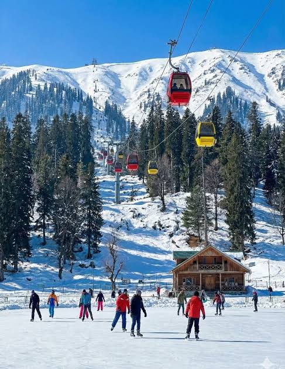
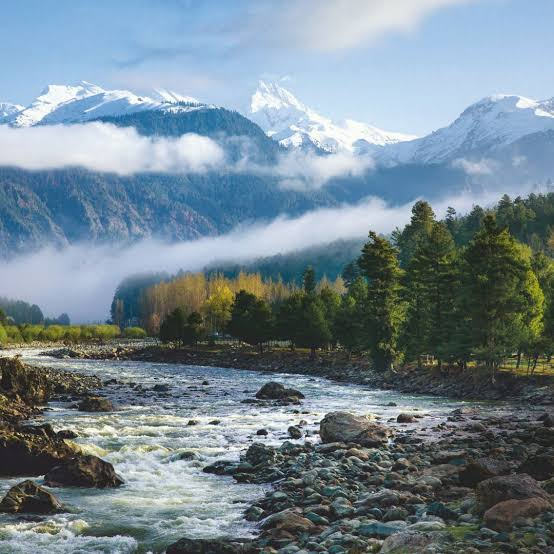
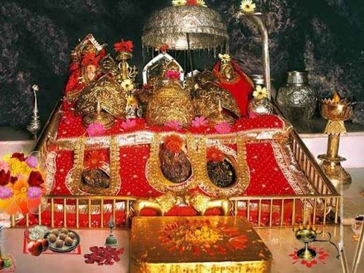
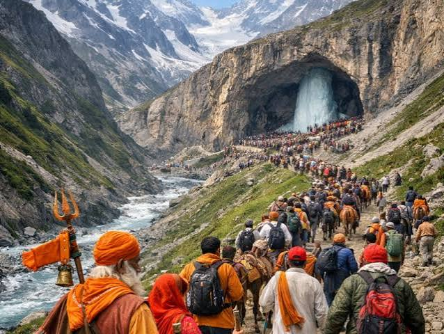
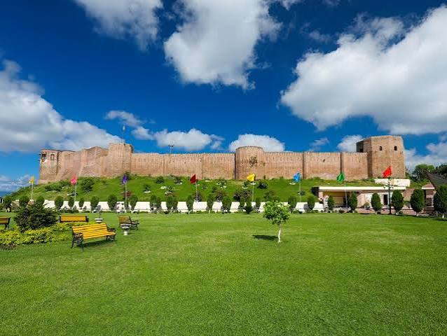
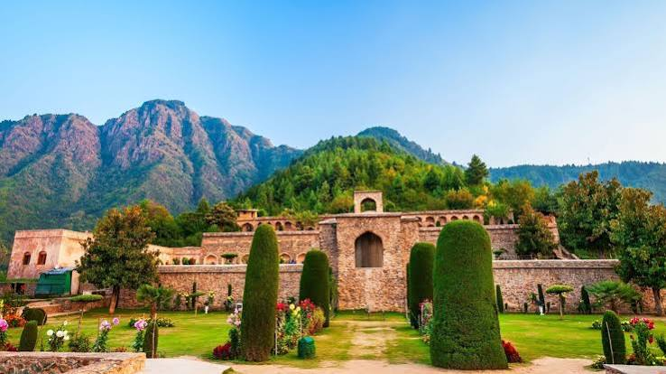
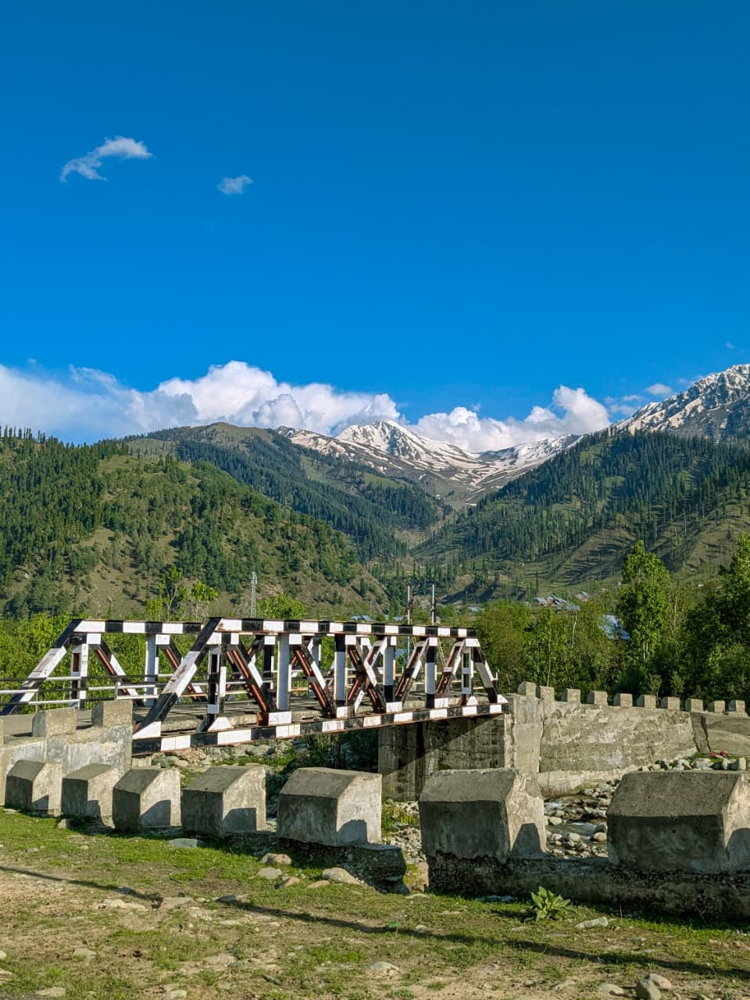

✦ NATURE ✦ CULTURE ✦ HERITAGE ✦
Welcome to the land of beautiful mountains, peaceful lakes, colourful gardens and rich traditions. Jammu and Kashmir is one of India's most fascinating tourist destinations. From snow-covered mountains to ancient temples, every place has something special to offer. Explore the famous attractions of this beautiful region!
Experience breathtaking Himalayan mountains, green valleys, beautiful meadows and peaceful natural landscapes.


Gulmarg is a beautiful hill station surrounded by snow-covered mountains. It is famous for skiing, green meadows and the Gulmarg Gondola cable car. It attracts tourists throughout the year and is a popular destination for adventure and nature lovers.
Pahalgam is known for its green valleys, rivers, pine forests and beautiful mountains. It is a popular destination for sightseeing, nature walks and enjoying peaceful surroundings. The beautiful Lidder River adds to its charm.
Sonamarg means Meadow of Gold. It is famous for its glaciers, snow-covered peaks and beautiful valleys. It offers amazing views of the Himalayan landscape.
Discover important spiritual destinations, ancient temples and sacred pilgrimage sites visited by thousands of devotees.


Vaishno Devi Temple is an important Hindu pilgrimage site located in the Trikuta Hills near Katra. Thousands of devotees visit this holy shrine every year to seek blessings.
Amarnath Cave is a famous Hindu pilgrimage destination located in the Himalayas. It is known for the naturally formed ice Shivling and the annual Amarnath Yatra.
Shankaracharya Temple is an ancient temple dedicated to Lord Shiva. It is situated on a hill in Srinagar and offers beautiful views of Dal Lake and the city.
Explore the rich history, traditional architecture, ancient forts and magnificent monuments of Jammu and Kashmir.


Bahu Fort is a historical fort located in Jammu. It is one of the important historical attractions of the region and is also known for the Bawe Wali Mata Temple.
Pari Mahal is a historical monument situated above Dal Lake in Srinagar. It is famous for its terraced gardens, historical importance and beautiful views of the city.
Mubarak Mandi Palace is a historical palace complex in Jammu. It is known for its beautiful architecture and combination of different architectural styles.
Enjoy the peaceful lakes, beautiful Mughal gardens, colourful flowers and charming scenery of Kashmir.

Dal Lake is one of the most famous attractions of Srinagar. It is known for its floating gardens, colourful Shikaras and traditional houseboats. It is often called the Jewel in the Crown of Kashmir.
Nishat Bagh is a beautiful Mughal garden located near Dal Lake. It is famous for its terraces, fountains, flowers and stunning mountain views.